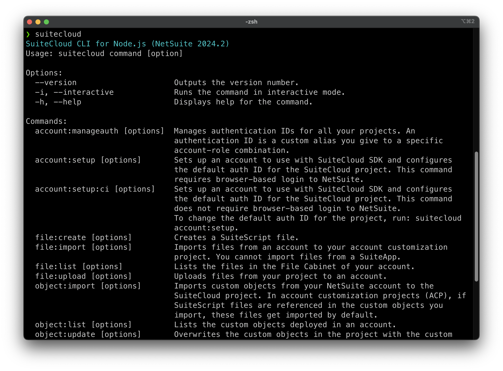

SuiteCloud SDK
SuiteApp development is done locally. This enables many modern coding good practices, such as the use of version control tools, which we emphatically recommend.
We offer an SDK that provides any actions to make the development process easier and smoother. You can install the SDK by navigating to:
You can access the SDK functionality either using the Node CLI or the SuiteCloud extension for VSCode. The latter has almost all the functionalities the SDK has to offer. Throughout this Quick Start we're going to use the Node CLI.

Pay special attention to the prerequisites before installing the CLI.
After the install is complete, navigate to an empty folder from your terminal and run the following command:
We will explore the different commands throughout this tutorial.
